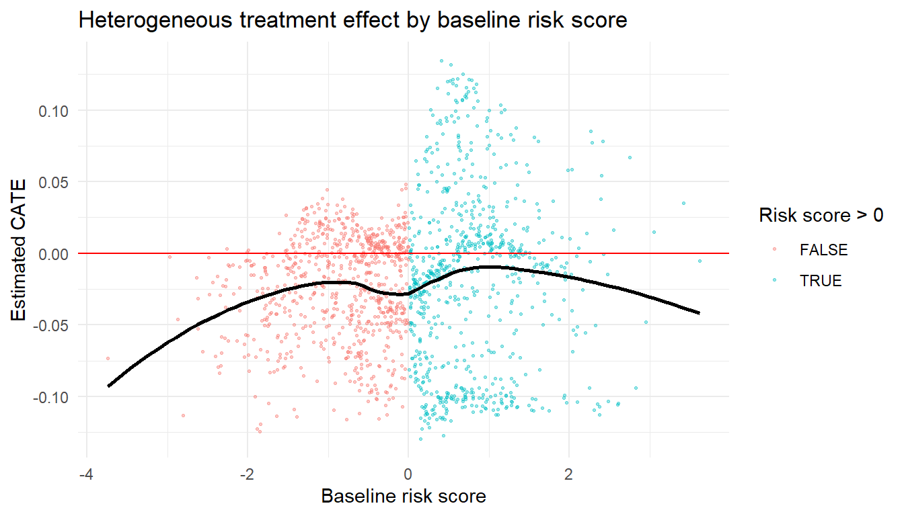

Identifying who benefits most (or least) from treatment
A large observational study estimates that a new antihypertensive reduces cardiovascular events by 4 percentage points overall. A clinician reviewing the result asks: “Does this drug work equally well for my 82-year-old patient with chronic kidney disease (CKD) stage 4 and my 55-year-old patient with no comorbidities?” The overall average treatment effect cannot answer that question, because it averages over patients who may respond very differently to the drug.
A natural first instinct is to split the data into subgroups and run separate analyses. That shortcut runs into trouble. Unadjusted within-subgroup comparisons do not control for confounding that varies across strata, and testing many subgroups inflates the false-positive rate. Worse, the “winner’s curse” means that whichever subgroup looks most impressive is also the most likely to be a false lead. What we need instead is a framework that defines subgroup-specific causal estimands, controls confounding within each subgroup, and keeps confirmatory findings honestly separate from exploratory ones.
This chapter provides that framework. You will learn to:
Define subgroup-specific causal estimands (the CATE).
Use TMLE to estimate prespecified subgroup effects with double robustness.
Use modern data-adaptive tools (causal forests and treatment-effect variable importance measures) to discover heterogeneity.
Recognize the key pitfalls: positivity fragility in small subgroups, multiple comparisons, and the distinction between confirmatory and exploratory findings.
The chapter moves from estimands (Section 2) through identification (Section 3) to estimation with TMLE (Sections 5 and 6). It then covers two heterogeneity-discovery tools, causal forests in Sections 7 and 8 and treatment-effect variable importance in Section 9, and closes with interpretation guidance.
Scope: effect modification vs. interaction
This chapter is about effect modification: one treatment \(A\) whose effect varies across levels of a baseline covariate \(V\). The estimands are the conditional average treatment effect, \(\text{CATE}(v) = E[Y(1) - Y(0) \mid V = v]\), and contrasts of subgroup-specific effects. \(V\) need not be a manipulable intervention; sex, age group, baseline biomarker, or stage of disease are all common examples.
The Interactions chapter treats a different question: two exposures or interventions, and whether their joint effect departs from what their individual effects would predict. That chapter’s estimands are built from four counterfactual mean outcomes under the joint exposure conditions \((0,0), (1,0), (0,1), (1,1)\), with additive and multiplicative interaction parameters and RERI as the standard summaries.
If the second variable is not itself conceptualised as an intervention, the estimand is usually effect modification rather than causal interaction.
The two chapters are meant to be read together. Effect modification asks who benefits more from one treatment, while interaction asks how two exposures combine. Both questions can matter in the same applied study, but they call for different estimands (Hernán and Robins 2025; Tyler J. VanderWeele 2009).
Learning objectives
Define effect modification, heterogeneous treatment effects (HTE), and the conditional average treatment effect (CATE)
Distinguish interaction from effect modification in the causal inference framework
Use TMLE to estimate subgroup-specific causal effects
Understand causal forests as a data-adaptive approach to discovering treatment effect heterogeneity
Recognize the risks of subgroup analyses: multiple testing, post-hoc selection, and the winner’s curse
Causal conclusions require that the identification assumptions hold; see Chapter 5 for details. When flexible machine learning is used for nuisance estimation, valid inference typically requires cross-fitting or a cross-validated TMLE variant.
19.1 1. Why study effect modification?
The average treatment effect summarises what happens in the population on average, but patients differ in age, comorbidities, biomarkers, baseline risk, and genetics. Clinically relevant questions, such as does this drug work better in high-risk patients, are cardiovascular risks higher with CKD, or does benefit differ by frailty, all turn on who benefits most and who benefits least. Effect modification is how we translate population-level evidence into individualised clinical and policy recommendations.
In real-world evidence (RWE) applications, effect modification questions tend to surface when clinicians suspect that treatment benefit or harm differs across clinically meaningful patient groups: groups defined by comorbidities, co-medications, disease severity, age, prior treatment history, or biomarker status. The goal is usually practical. Does an intervention have a larger absolute benefit, a smaller benefit, or greater harm in a subgroup a clinician could actually recognise at the bedside? Comparative-safety studies in pharmacoepidemiology raise this routinely, especially when a drug’s safety profile may differ between patients with and without a baseline comorbidity. When the second variable is itself a manipulable exposure rather than a fixed patient characteristic, the question shifts to causal interaction, covered in the Interactions chapter.
19.2 2. Causal estimands for effect modification
To study heterogeneity, we define the conditional average treatment effect (CATE).
What is a CATE? (plain-language version)
The conditional average treatment effect (CATE) answers a simple question: “What is the average treatment effect for people who share a specific characteristic?”
The CATE among women tells you the average effect of the treatment specifically among women. The CATE at age 80 tells you the expected effect for an 80-year-old.
Formally, let (V) be a baseline covariate or set of covariates. The CATE is:
[ CATE(v) = E[Y(1) - Y(0) V = v]. ]
For categorical variables (e.g., age group):
[ ATE_{} = E[Y(1) - Y(0) < 75], ]
and similarly for other strata.
Put simply, the ATE gives you one number for everyone. The CATE gives you a different number for each subgroup, so you can see where the treatment works best and where it works worst.
The estimand should match the scientific question:
Prespecified subgroups defined by clinical or policy criteria, such as sex, race, or CKD stage.
Continuous moderators treated as smooth functions, such as the CATE as a function of age or estimated glomerular filtration rate (eGFR).
Data-adaptively learned subgroups discovered by trees, forests, or variable-importance methods.
19.3 3. Identification assumptions
The standard identification assumptions (consistency, exchangeability given measured confounders, and positivity) are introduced in Chapter 5. Two issues become more important when the target is a CATE rather than the average treatment effect.
First, the moderator \(V\) must be measured before treatment, and the analyst must avoid conditioning on post-treatment variables. Conditioning on a downstream variable can induce collider bias that makes the CATE non-identifiable.
Second, positivity gets more fragile in subgroups. Slicing the data into smaller groups makes it ever more likely that some confounder-by-treatment combinations have zero or near-zero representation. Apply the diagnostics from Chapter 11 within every subgroup of interest, not only at the cohort level.
19.4 4. A workflow for effect modification
A practical workflow for investigating effect modification has six steps:
Define causal estimands: subgroup-specific ATE or CATE(v).
Choose moderators: prespecified for confirmatory work, exploratory for hypothesis generation.
Estimate nuisance functions with Super Learner.
Estimate heterogeneous effects using TMLE for prespecified subgroups, causal forests or treatment-effect variable importance for exploratory discovery.
Quantify uncertainty using the influence function, sample splitting, or the bootstrap.
Document every step and prespecification so a reader can reconstruct the analysis.
The single most important rule is to decide on subgroups and moderators before looking at outcomes. Prespecification protects against cherry-picking. When an analysis explores post hoc, label the findings clearly as hypothesis-generating.
The next sections walk through TMLE for prespecified subgroups (Sections 5 and 6), causal forests for data-adaptive heterogeneity (Sections 7 and 8), and treatment-effect variable importance as a further discovery tool (Section 9).
19.5 5. TMLE for subgroup-specific effects
To estimate the causal effect within a prespecified subgroup, restrict the data to that subgroup and run TMLE inside it. The estimand here is a subgroup-specific ATE or CATE,\(E[Y(1) - Y(0) \mid V = 1]\), not an additive interaction estimand. Comparing two subgroup-specific ATEs gives a contrast of CATEs, which describes heterogeneity in the effect of \(A\) across the levels of a baseline covariate. The additive interaction parameter \(p_{11} - p_{10} - p_{01} + p_{00}\) defined in the Interactions chapter is a different quantity: it averages four counterfactual means under joint interventions on two manipulable exposures. Use that chapter when both variables are interventions; stay here when one is a treatment and the other is a baseline characteristic.
The double-robustness and Super Learner machinery covered in Chapter 8 and Chapter 9 carries over directly. The only change is that the analytic dataset is now the subgroup, not the full cohort.
Worked example: the ATE among patients younger than 75.
Show code
library(tmle)library(SuperLearner)library(tidyverse)# Illustrative data: Y is independent of A here, so the true subgroup effect is ~0.set.seed(123)dat <-tibble(Y =rbinom(2000, 1, 0.2),A =rbinom(2000, 1, 0.5),age =rnorm(2000, 75, 6),cvd =rbinom(2000, 1, 0.4),eGFR =rnorm(2000, 60, 15))dat <- dat %>%mutate(age_under75 =if_else(age <75, 1, 0))sl_lib <-c("SL.glm", "SL.ranger", "SL.mean")tmle_sub <-tmle(1Y = dat$Y[dat$age_under75 ==1],A = dat$A[dat$age_under75 ==1],W =as.data.frame(dat %>%filter(age_under75 ==1) %>%2select(cvd, eGFR)),family ="binomial",3Q.SL.library = sl_lib,g.SL.library = sl_lib)tmle_sub$estimates$ATE#> $psi#> [1] 0.01827827#> #> $var.psi#> [1] 0.0006070161#> #> $CI#> [1] -0.03001073 0.06656727#> #> $pvalue#> [1] 0.4581586#> #> $bs.var#> [1] NA#> #> $bs.CI.twosided#> [1] NA NA#> #> $bs.CI.onesided.lower#> [1] -Inf NA#> #> $bs.CI.onesided.upper#> [1] NA Inf
1
Subset Y and A to the target subgroup before passing to tmle(); this estimates the subgroup-specific ATE\(E[Y(1) - Y(0) \mid \text{age} < 75]\) rather than the marginal ATE; the estimand is conditional on being in the subgroup
2
W contains the confounders for the subgroup analysis. Notably, the subgrouping variable age_under75 itself is excluded from W; including it would condition the propensity score model on the stratification variable, collapsing variation and potentially destabilizing the estimate
3
The same SL library is used for both the outcome model (Q) and propensity score (g); in small subgroups you may need to simplify the library or reduce cross-validation folds to prevent empty folds
Interpretation: read tmle_sub$estimates$ATE (printed above) as the subgroup-specific risk difference \(E[Y(1) - Y(0) \mid \text{age} < 75]\) with an influence-curve-based 95% CI. Because the demonstration data are random noise (Y was generated independently of A), the estimate here sits close to zero. On real data you would report the subgroup point estimate and CI in its place.
The appeal of this approach is that it gives valid subgroup-specific estimates and leans on Super Learner for the nuisance models. Its limits are that it does not produce a continuous CATE curve, and it asks the analyst to prespecify subgroups large enough to support an estimate in each.
19.6 6. TMLE for continuous effect modifiers
When the modifier \(V\) is continuous, the analyst often wants the entire CATE curve, \(CATE(v) = E[Y(1) - Y(0) \mid V = v]\), rather than the effect within a single bin. The usual TMLE strategy projects the CATE onto a small number of basis functions of \(V\) (splines or polynomials), estimates each projection coefficient with TMLE, and reconstructs a smooth \(\widehat{CATE}(v)\).
The result is a continuous picture of how the treatment effect varies across a modifier, with the same double-robustness guarantees that apply to TMLE for the average treatment effect.
Prespecified subgroup analysis answers the question given these subgroups, where is the effect larger? A different question is which covariates drive heterogeneity in the first place? Two modern targeted-learning tools take that on. Causal forests are exploratory heterogeneity-discovery tools, not confirmatory causal-interaction estimators. They produce individual-level CATE estimates by data-adaptively partitioning covariate space. That is useful for generating hypotheses about where heterogeneity sits, but not for confirming a prespecified additive or multiplicative interaction parameter. Section 8 gives the R implementation, and Section 9 introduces treatment-effect variable importance (te-VIM) measures, which add inferential rigor to the discovery step by targeting the contribution of each candidate modifier to the variance of the CATE.
Causal forests (Wager and Athey 2018; Athey and Imbens 2016) are tree-based methods built to estimate CATEs. Think of them as smart subgroup finders that search across covariates for splits that maximise treatment-effect heterogeneity. Honest sample splitting and averaging across many trees yield smooth, individual-level CATE estimates \(\widehat\tau(x)\) with approximate pointwise confidence intervals. A related family of metalearners (the S-, T-, and X-learners) reaches the same target from a different direction, repurposing any off-the-shelf regression method into a CATE estimator by combining separate models for the outcome and the treatment (Künzel et al. 2019).
For all their power, causal forests come with real limitations.
Caveats about causal forests
Causal forests are not doubly robust, can overfit to noise in small samples, and their output is associational unless embedded in a rigorous causal framework. Treat causal forest results as exploratory heterogeneity discovery, not as confirmatory causal interaction estimates. Validate any apparent heterogeneity in independent data, or prespecify it as a confirmatory subgroup analysis in a future study before reporting it as a causal interaction.
There is a deeper reason these tools come with weaker inferential guarantees than the average effect does. The full CATE function, the treatment effect at every covariate value, is not a pathwise-differentiable parameter. Unlike the average treatment effect, it cannot be written so that a single influence function describes how it responds to small changes in the data distribution, and that property is what delivers ordinary root-\(n\) confidence intervals. So there is no general plug-in estimator of the entire CATE surface with simple valid inference. This is why the principled tools in the rest of this chapter target pathwise-differentiable summaries of the CATE instead: a subgroup-specific average effect, a projection of the CATE onto a few basis functions, or the variance-contribution parameter of te-VIM, rather than attaching confidence intervals directly to an estimated CATE surface.
library(grf)set.seed(2028)# Simulate data with treatment effect heterogeneity.# n = 1500 keeps the causal-forest fit fast in both the static and the# WebR (interactive) builds. Production analyses can use n in the tens# of thousands without changing the workflow.n <-1500X <-data.frame(age =rnorm(n, 75, 6),cvd =rbinom(n, 1, 0.4),risk_score =rnorm(n, 0, 1))A <-rbinom(n, 1, plogis(-0.5+0.2* (X$age -75) -0.8* X$risk_score))# Treatment effect depends on risk_scoretau_true <--0.05+0.1* (X$risk_score >0)Y <-rbinom(n, 1, plogis(-2+ tau_true * A +0.05* (X$age -75) +0.5* X$cvd))X_mat <-as.matrix(X)cf <-causal_forest(1X = X_mat,2Y = Y,3W = A)# Individualized CATE estimatestau_hat <-predict(cf)$predictionssummary(tau_hat)#> Min. 1st Qu. Median Mean 3rd Qu. Max. #> -0.129727 -0.053581 -0.014718 -0.020631 0.007913 0.134537
1
X: covariate matrix that includes all potential effect modifiers; the forest will search for splits across these covariates that maximize treatment effect heterogeneity; unlike TMLE’s W, this should include variables you suspect are moderators even if they are not confounders
2
Y: outcome vector; causal_forest internally uses a Robinson decomposition (Robinson 1988), which separately estimates \(E[Y \mid X]\) and \(E[W \mid X]\) before fitting the heterogeneous treatment effect
3
W = A: the binary treatment indicator (not to be confused with W the confounder matrix); causal_forest uses an honest splitting approach: each tree splits on X for heterogeneity but estimates treatment effects using held-out data from that split, preventing overfitting
19.8.1 Visualizing CATE vs. risk score
Show code
library(ggplot2)ggplot(data.frame(risk_score = X$risk_score, tau_hat = tau_hat),aes(risk_score, tau_hat, color = risk_score >0)) +geom_point(size =0.5, alpha =0.4) +geom_hline(yintercept =0, color ="red") +geom_smooth(method ="loess", se =FALSE, color ="black") +labs(x ="Baseline risk score", y ="Estimated CATE", color ="Risk score > 0",title ="Heterogeneous treatment effect by baseline risk score") +theme_minimal()

Figure 19.1: Estimated conditional average treatment effects (CATEs) from the causal forest against baseline risk score. The forest recovers the heterogeneity built into the simulation: estimated effects differ systematically above versus below a risk score of zero. The black curve is a loess smooth; the red line marks no effect.
The CATE estimates separate by risk score (Figure 19.1). Patients above and below a risk score of zero show distinct effect patterns, which is the heterogeneity the forest managed to recover.
19.9 9. Treatment-effect variable importance with TMLE
Causal forests give one predicted CATE per individual, handy for visualisation and for forming high-benefit and low-benefit subgroups. What they do not tell the analyst is which covariates are driving the heterogeneity, and they offer no influence-function-based confidence intervals for that question. Treatment-effect variable importance measures (te-VIM) fill that gap. The method, developed in Hines, Diaz-Ordaz, and Vansteelandt (2023, arXiv:2309.13324) and implemented in the te_vim repository by Susmann and colleagues, defines a causal parameter that measures the contribution of each candidate effect modifier to the variance of the CATE, and estimates it using TMLE or a one-step efficient estimator with valid confidence intervals (Li et al. 2026).
19.9.1 The idea in plain English
Let \(\tau(W) = E[Y(1) - Y(0) \mid W]\) be the full conditional treatment effect given all baseline covariates \(W\), and let \(\tau_s(W_{-s}) = E[Y(1) - Y(0) \mid W_{-s}]\) be the conditional treatment effect when one candidate modifier \(W_s\) is excluded. The te-VIM parameter is
In words: \(\Theta_s\) measures how much the CATE would change, on average and squared, if covariate \(W_s\) were left out of the conditioning set. A large \(\Theta_s\) says that \(W_s\) contributes meaningfully to treatment-effect heterogeneity; a small one says it does not. The squared form keeps the parameter non-negative and emphasises modifiers that produce large effect-scale differences in either direction.
19.9.2 Why TMLE is the right framework
Naive plug-in estimation of \(\Theta_s\) can be badly biased, because \(\tau\) and \(\tau_s\) are themselves estimated from the data. Hines and colleagues derive the efficient influence function for \(\Theta_s\) and provide three estimators: a simple substitution estimator (SS), a one-step estimating-equation estimator (EE), and a TMLE. The TMLE and EE estimators are doubly robust and admit influence-function-based standard errors, so the analyst gets a confidence interval for the importance of each candidate modifier rather than just a ranking.
This complements causal forests well. The estimator targets a clearly defined causal parameter rather than a heuristic split-improvement statistic, it gives valid uncertainty quantification under flexible nuisance estimation, and it is interpretable: because \(\Theta_s\) lives on the squared-CATE scale, analysts can compare the relative importance of candidate modifiers directly.
19.9.3 Implementation sketch
The te_vim repository ships a reproducible workflow built on sl3 and tmle3. The run_VIM() driver function fits the nuisance regressions for \(Q\), \(g\), the full CATE \(\tau\), and the reduced CATE \(\tau_s\), then returns substitution, one-step, and TMLE estimates of \(\Theta_s\) with influence-function standard errors.
Show code
# Treatment-effect variable importance via TMLE# Source: https://github.com/herbps10/te_vim# Companion paper: Hines, Diaz-Ordaz, Vansteelandt (2023), arXiv:2309.13324library(sl3)library(tmle3)library(foreach)library(doParallel)# The repository provides est_function/{sl3_config.R, fit_para.R, vim.R}# which define run_VIM() and the underlying TMLE/EE/SS estimatorssource("R/est_function/sl3_config.R")source("R/est_function/fit_para.R")source("R/est_function/vim.R")# Candidate effect modifiersws <-c("age", "wtkg", "karnof", "cd40", "cd80", "homo","gender", "race", "symptom", "drugs", "hemo", "str2")# Loop over each candidate modifier and estimate Theta_sdf_vim <-foreach(i =seq_along(ws), .combine ="rbind") %do% { res <-run_VIM(df = df_sub, # data frame with Y, A, and candidate modifierssl_Q = sl_Q, # Super Learner library for the outcome regressionsl_g = sl_g, # Super Learner library for the propensity scoresl_x = sl_x, # Super Learner library for the CATE regressionsws = ws[i], # name of the candidate modifiercv =TRUE, # use cross-fittingdr =TRUE, # doubly robust nuisance fittingmax_it =1e4 )data.frame(varname = ws[i],importance =c(res$resEE$coef, res$resTMLE$coef, res$resSS$coef),ci_l =c(res$resEE$ci_l, res$resTMLE$ci_l, res$resSS$ci_l),ci_u =c(res$resEE$ci_u, res$resTMLE$ci_u, res$resSS$ci_u),method =c("EE", "TMLE", "SS") )}
The output is a forest-plot-ready table with one \(\Theta_s\) estimate (and 95% CI) per candidate modifier, separately for the substitution, one-step, and TMLE estimators. Analysts usually read the TMLE or EE columns and keep the SS column as a sanity check.
19.9.4 Comparison with causal forests
The two approaches answer related but distinct questions, and in practice they complement each other (Table 19.1):
Table 19.1: Heterogeneity-discovery tools compared: output, inference, and best use.
Tool
Output
Inference
Best use
Causal forest (grf)
Individual-level \(\widehat\tau(x)\) for every patient
Ranked importance of variables, exposure pairs, and exposure-covariate combinations under stochastic intervention
TMLE on a held-out estimation sample after basis-function discovery
Combined effect-modification and interaction discovery in mixed-exposure settings
A typical workflow runs te-VIM first (or SuperNOVA, when exposures are continuous mixtures) to see which covariates contribute most to heterogeneity, then a causal forest restricted to those covariates to visualise the CATE surface, and finally TMLE within prespecified subgroups defined by the most important modifier for confirmatory inference.
Same caveats apply
te-VIM, EffectXshift, and SuperNOVA are all heterogeneity-discovery tools. The subgroups and importance rankings they produce are exploratory and should be validated, prespecified in a follow-up study, or accompanied by appropriate multiplicity control before being treated as confirmatory.
19.10 10. Subgrouping using CATE estimates
We can create subgroups such as:
“High predicted benefit” vs “low predicted benefit”
This is exploratory, not confirmatory.
It can inform:
Hypothesis generation
Prespecified subgroup definitions in future trials
19.11 11. Choosing among the discovery tools
Use TMLE in prespecified subgroups when you already know which subgroups to interrogate; the estimator is doubly robust, targets a clearly defined parameter, and supports valid confidence intervals. Reach for causal forests when you want the data to show you where heterogeneity sits, especially to visualise an individual-level CATE surface. Reach for te-VIM when you want a ranked, inferentially principled answer to which covariates drive heterogeneity for a binary or modest-cardinality treatment. And reach for EffectXshift or SuperNOVA when the exposure of interest is continuous (a dose, a pollutant concentration, a mixture component) and the natural causal estimand is a stochastic-intervention shift rather than a fixed binary contrast. The strongest analyses combine these: a discovery tool to rank candidate modifiers, a causal forest or visualisation step to inspect the leading modifiers, and TMLE within prespecified subgroups for confirmatory inference.
19.12 12. Interpretation and reporting: avoiding pitfalls
The multiple-comparisons trap
Testing 20 subgroups at \(\alpha = 0.05\) produces one apparently significant finding by chance alone. The defences: prespecify the main effect modifiers, correct for multiplicity (false-discovery rate or family-wise error rate), emphasise uncertainty, treat causal-forest and te-VIM findings as exploratory, and always present the overall ATE alongside any heterogeneity results (Kent et al. 2020; Knol and VanderWeele 2012). When several subgroup effects are tested at once, methods for simultaneous subgroup inference give confidence statements that hold jointly across the subgroups rather than one at a time (Wei, Petersen, and Laan 2023).
19.12.1 Do not rank subgroup effects mechanically
Subgroup effects should not be ranked mechanically unless they are estimated on the same scale, for the same target population, over the same follow-up period, and with comparable support (Westreich and Greenland 2013). A larger effect estimate in one subgroup may reflect a higher baseline risk, a different covariate distribution, or poorer support there rather than a more important biological mechanism. The same caveat applies to comparisons across studies and across analyses that use different adjustment sets. Before headlining one subgroup as “where the drug works best,” confirm the comparison is anchored to a single estimand and a single target population.
19.13 13. Example: combining TMLE and causal forests
Show code
# Step 1: ATE with TMLEsl_lib <-c("SL.glm", "SL.ranger", "SL.mean")tmle_ate <-tmle(Y = Y,A = A,1W = X,family ="binomial",2Q.SL.library = sl_lib,g.SL.library = sl_lib)tmle_ate$estimates$ATE# Step 2: CATEs with causal forest (already computed as tau_hat)summary(tau_hat)
1
W = X passes the full covariate matrix including potential effect modifiers like age, cvd, risk_score; the TMLE ATE averages over all of these, while the subsequent causal forest step decomposes heterogeneity across them
2
Using the same sl_lib for Q and g is standard when the covariate space is the same; consider richer libraries for g if treatment assignment is more complex (e.g., multiple prescribers, non-random clinic assignment)
TMLE gives a population-level effect with solid identifiability and efficiency. The causal forest gives individual-level estimated CATEs for exploring how effects vary. te-VIM (Section 9) then supplies an inferentially principled ranking of which covariates contribute most to that variation.
See the Running Case Study for the full data description. Effect modification matters clinically in the highly active antiretroviral therapy (HAART) cohort because the benefit of treatment may vary across patient characteristics. Patients with very low baseline CD4 counts face the highest mortality risk and may see the largest absolute risk reduction from HAART, while patients with higher CD4 at baseline have less room to benefit. Age is another plausible modifier, since immune reconstitution dynamics differ for older patients.
We prespecify two subgroups by splitting baseline CD4 at its median. Two groups, rather than many fine bins, keep each stratum large enough to support a within-stratum effect estimate. That is the first defence against the positivity problem described in Section 3.
Step 1: check positivity within each stratum before estimating anything. A subgroup CATE is only identified where both treated and untreated patients exist across the confounder distribution inside that subgroup. The diagnostic below refits the propensity model within each CD4 group and reports the size of each treatment arm, the number of deaths, and the range of within-stratum propensity scores. It uses base R only, so it runs without the targeted-learning packages.
Show code
source("_data/load-haart-cohort.R")# Prespecified subgroups: split baseline CD4 at its median (two groups).cd4_med <-median(haart_baseline$cd4_baseline)haart_baseline$cd4_group <-ifelse(haart_baseline$cd4_baseline < cd4_med,"low_cd4", "high_cd4")# Per-stratum positivity diagnostic: treated/untreated counts, deaths, and the# range of estimated propensity scores within the stratum. Propensity scores# pinned near 0 or 1, or an almost-empty treatment arm, signal that the CATE in# that stratum rests on extrapolation rather than data.positivity_by_group <-lapply(split(haart_baseline, haart_baseline$cd4_group),function(d) { ps <-predict(glm(ever_haart ~ age + sex + cd4_sqrt_baseline,family = binomial, data = d), type ="response")data.frame(n =nrow(d),n_treated =sum(d$ever_haart),n_untreated =sum(d$ever_haart ==0),deaths =sum(d$died),ps_min =round(min(ps), 3),ps_max =round(max(ps), 3) ) })do.call(rbind, positivity_by_group)#> n n_treated n_untreated deaths ps_min ps_max#> high_cd4 600 136 464 11 0.213 0.261#> low_cd4 600 240 360 20 0.262 0.801
In this cohort the low-CD4 stratum is where positivity strains. Guidelines push almost everyone with a low CD4 count toward HAART, so the untreated arm in that stratum is small and its estimated propensity scores cluster near 1. That is exactly the configuration that inflates inverse-probability weights and lets g-computation extrapolate silently (Chapter 11). A subgroup whose CATE rests on a handful of untreated patients is fragile no matter which estimator you use.
Step 2: estimate the subgroup-specific effect with TMLE, but only in strata that passed the positivity check. The stratifying variable (CD4 group) is excluded from W; the within-stratum confounders are age, sex, and baseline CD4 on the square-root scale.
Show code
library(tmle)library(SuperLearner)sl_lib <-c("SL.glm", "SL.mean") # keep the library small in sparse stratarun_subgroup_tmle <-function(d) { fit <-tmle(Y = d$died,A = d$ever_haart,W = d[, c("age", "sex", "cd4_sqrt_baseline")],family ="binomial",Q.SL.library = sl_lib,g.SL.library = sl_lib )c(ATE = fit$estimates$ATE$psi,lower = fit$estimates$ATE$CI[1],upper = fit$estimates$ATE$CI[2])}lapply(split(haart_baseline, haart_baseline$cd4_group), run_subgroup_tmle)
With only 31 deaths spread across 1,200 patients, the per-stratum event counts are small, so the confidence intervals are wide and a rich Super Learner library can overfit. Three practical rules follow. Keep the number of prespecified subgroups small. Run the positivity diagnostic in every stratum, and drop (or explicitly flag as extrapolation) any subgroup with a near-empty treatment arm. And report the overall ATE alongside the subgroup estimates, so a reader can see how far each CATE departs from the average and judge whether that departure is signal or sparse-data noise.
19.15 14. Summary
Key takeaways
Define causal estimands (CATE, subgroup-specific ATE) before looking at the data. Use TMLE for confirmatory subgroup effects, causal forests for exploratory CATE surfaces, and te-VIM for inferential ranking of candidate modifiers.
Positivity and multiple comparisons are the two biggest threats in subgroup analyses.
Report the overall ATE first, prespecify subgroups, correct for multiplicity, and label exploratory findings honestly. When the scale of heterogeneity matters (additive vs. multiplicative), follow the recoding and reporting guidance of (Knol et al. 2011).
Effect modification (this chapter) and causal interaction (the Interactions chapter) answer related but distinct scientific questions; the two chapters are complementary.
19.15.1 Bridge to optimal treatment rules
Effect modification is also the conceptual bridge to optimal treatment rules. Once we move from asking whether the average effect differs across one subgroup variable to asking which treatment rule, applied as a function of many baseline covariates, would maximise expected outcomes in the population, we have entered the setting of individualised treatment rules and policy learning. The CATE machinery in this chapter (TMLE for prespecified subgroups, causal forests, treatment-effect variable importance) is the input to that next step. The formal estimators and decision-theoretic framing of optimal treatment regimes are beyond the scope of this handbook.
19.16 Sources and further reading
Athey S, Imbens GW (2016). Recursive partitioning for heterogeneous causal effects. PNAS 113(27):7353-7360 (Athey and Imbens 2016).
Wager S, Athey S (2018). Estimation and inference of heterogeneous treatment effects using random forests. JASA 113(523):1228-1242 (Wager and Athey 2018).
Hines O, Diaz-Ordaz K, Vansteelandt S (2023). Variable importance measures for heterogeneous causal effects. arXiv:2309.13324. https://arxiv.org/abs/2309.13324
Susmann H et al. The te_vim repository (TMLE, EE, and SS estimators for treatment-effect variable importance). https://github.com/herbps10/te_vim
McCoy DB et al. (2023). Semi-parametric identification and estimation of interaction and effect modification in mixed exposures using stochastic interventions. arXiv:2305.01849. https://arxiv.org/abs/2305.01849
Knol MJ, VanderWeele TJ (2012). Recommendations for presenting analyses of effect modification and interaction. Int J Epidemiol 41(2):514-520 (Knol and VanderWeele 2012).
Knol MJ, Vandenbroucke JP, Scott P, Egger M (2011). What do case-control studies estimate? Survey of methods and assumptions in published case-control research. Am J Epidemiol 173(9):1073-1081 (Knol et al. 2011).
Kent DM et al. (2020). The Predictive Approaches to Treatment effect Heterogeneity (PATH) Statement. Ann Intern Med 172(1):35-45 (Kent et al. 2020).
Westreich D, Greenland S (2013). The table 2 fallacy: presenting and interpreting confounder and modifier coefficients. Am J Epidemiol 177(4):292-298 (Westreich and Greenland 2013).
Q1. You run a causal forest and find that patients over 80 have a larger treatment effect than younger patients. Is this a confirmatory or exploratory finding?
This is an exploratory finding. Causal forests are data-adaptive methods that search across covariates to discover heterogeneity. Because the “patients over 80” subgroup was not prespecified before the analysis, the finding is hypothesis-generating. To treat it as confirmatory, you would need to prespecify this subgroup in a new study or validation dataset, with appropriate multiplicity correction. Presenting it as a confirmed subgroup effect risks the winner’s curse and inflated type I error.
Q2. Why is positivity especially fragile in subgroup analyses compared to the overall ATE analysis?
Positivity requires that both treated and untreated individuals exist within every stratum of confounders. When you slice the data into subgroups, the sample size in each stratum shrinks, making it increasingly likely that some confounder-by-treatment combinations have zero or near-zero representation. For example, if you estimate the ATE among patients over 80 with CKD stage 4, there may be very few (or no) untreated individuals in that subgroup, making the causal effect unidentifiable there. The overall ATE analysis pools across subgroups and is therefore less vulnerable to these sparse-data positivity violations.
Q3. What is the key difference between TMLE, causal forests, and te-VIM for studying effect modification?
TMLE is designed for confirmatory inference on prespecified subgroups or estimands. It is doubly robust (consistent if either the outcome model or the propensity model is correct), provides valid confidence intervals grounded in semiparametric efficiency theory, and targets a clearly defined causal parameter. Causal forests are designed for exploratory heterogeneity discovery: they search data-adaptively across covariates to find where treatment effects vary, but they are not doubly robust, are more susceptible to overfitting, and their output should be treated as hypothesis-generating. te-VIM provides an inferential bridge between the two: it targets a specific causal parameter (the contribution of each candidate modifier to the variance of the CATE) and estimates it with TMLE or a one-step estimator that supplies valid confidence intervals. The strongest analyses use all three: te-VIM to rank candidate modifiers, causal forests to visualise heterogeneity along the leading modifiers, and TMLE for confirmatory subgroup-specific effects.
19.18 What comes next
Effect modification analysis raises a natural follow-up: when two distinct exposures act jointly, does their combined effect depart from what each one alone predicts? That is the question of causal interaction, taken up in the next chapter. The diagnostics chapter that follows shows how to check whether identifiability and modelling assumptions are credible enough to support either kind of analysis.
Athey, Susan, and Guido Imbens. 2016. “Recursive Partitioning for Heterogeneous Causal Effects.”Proceedings of the National Academy of Sciences 113 (27): 7353–60. https://doi.org/10.1073/pnas.1510489113.
Athey, Susan, Julie Tibshirani, and Stefan Wager. 2019. “Generalized Random Forests.”Annals of Statistics 47 (2): 1148–78.
Kent, David M., Jessica K. Paulus, David van Klaveren, Ralph D’Agostino, Steven Goodman, Rodney Hayward, John P. A. Ioannidis, et al. 2020. “The Predictive Approaches to Treatment effect Heterogeneity (PATH) Statement.”Annals of Internal Medicine 172 (1): 35–45. https://doi.org/10.7326/M18-3667.
Knol, Mirjam J., and Tyler J. VanderWeele. 2012. “Recommendations for Presenting Analyses of Effect Modification and Interaction.”International Journal of Epidemiology 41 (2): 514–20. https://doi.org/10.1093/ije/dyr218.
Knol, Mirjam J., Tyler J. VanderWeele, Rolf H. H. Groenwold, Olaf H. Klungel, Maroeska M. Rovers, and Diederick E. Grobbee. 2011. “Estimating Measures of Interaction on an Additive Scale for Preventive Exposures.”European Journal of Epidemiology 26 (6): 433–38. https://doi.org/10.1007/s10654-011-9554-9.
Künzel, Sören R., Jasjeet S. Sekhon, Peter J. Bickel, and Bin Yu. 2019. “Metalearners for Estimating Heterogeneous Treatment Effects Using Machine Learning.”Proceedings of the National Academy of Sciences 116 (10): 4156–65.
Li, Haodong, Alan E. Hubbard, Oliver J. Hines, Andrea M. Storås, Kajsa Kvist, and Mark J. van der Laan. 2026. “Targeted Learning on a Variable Importance Measure for Heterogeneous Treatment Effects.”https://arxiv.org/abs/2309.13324.
Robinson, Peter M. 1988. “Root-N-Consistent Semiparametric Regression.”Econometrica 56 (4): 931–54.
VanderWeele, Tyler J, and Mirjam J Knol. 2014. “A Tutorial on Interaction.”Epidemiologic Methods 3 (1): 33–72.
Wager, Stefan, and Susan Athey. 2018. “Estimation and Inference of Heterogeneous Treatment Effects Using Random Forests.”Journal of the American Statistical Association 113 (523): 1228–42. https://doi.org/10.1080/01621459.2017.1319839.
Wei, Bo, Maya L Petersen, and Mark J van der Laan. 2023. “Simultaneous Inference for Many Subgroup Effects with Targeted Learning.”arXiv Preprint arXiv:2306.00000.
Westreich, Daniel, and Sander Greenland. 2013. “The Table 2 Fallacy: Presenting and Interpreting Confounder and Modifier Coefficients.”American Journal of Epidemiology 177 (4): 292–98.
Source Code
---format: html---*Estimated reading time: 35 minutes*# Effect Modification and Heterogeneous Treatment Effects {#sec-effect-modification}*Identifying who benefits most (or least) from treatment*A large observational study estimates that a new antihypertensive reduces cardiovascular events by 4 percentage points overall. A clinician reviewing the result asks: "Does this drug work equally well for my 82-year-old patient with chronic kidney disease (CKD) stage 4 and my 55-year-old patient with no comorbidities?" The overall average treatment effect cannot answer that question, because it averages over patients who may respond very differently to the drug.A natural first instinct is to split the data into subgroups and run separate analyses. That shortcut runs into trouble. Unadjusted within-subgroup comparisons do not control for confounding that varies across strata, and testing many subgroups inflates the false-positive rate. Worse, the "winner's curse" means that whichever subgroup looks most impressive is also the most likely to be a false lead. What we need instead is a framework that defines subgroup-specific causal estimands, controls confounding within each subgroup, and keeps confirmatory findings honestly separate from exploratory ones.This chapter provides that framework. You will learn to:1. Define subgroup-specific causal estimands (the CATE).2. Use TMLE to estimate prespecified subgroup effects with double robustness.3. Use modern data-adaptive tools (causal forests and treatment-effect variable importance measures) to discover heterogeneity.4. Recognize the key pitfalls: positivity fragility in small subgroups, multiple comparisons, and the distinction between confirmatory and exploratory findings.The chapter moves from estimands (Section 2) through identification (Section 3) to estimation with TMLE (Sections 5 and 6). It then covers two heterogeneity-discovery tools, causal forests in Sections 7 and 8 and treatment-effect variable importance in Section 9, and closes with interpretation guidance.::: {.callout-note}## Scope: effect modification vs. interactionThis chapter is about **effect modification**: one treatment $A$ whose effect varies across levels of a baseline covariate $V$. The estimands are the conditional average treatment effect, $\text{CATE}(v) = E[Y(1) - Y(0) \mid V = v]$, and contrasts of subgroup-specific effects. $V$ need not be a manipulable intervention; sex, age group, baseline biomarker, or stage of disease are all common examples.The **[Interactions chapter](03-04b-interactions-rwe.qmd)** treats a different question: two exposures or interventions, and whether their joint effect departs from what their individual effects would predict. That chapter's estimands are built from four counterfactual mean outcomes under the joint exposure conditions $(0,0), (1,0), (0,1), (1,1)$, with additive and multiplicative interaction parameters and RERI as the standard summaries.If the second variable is not itself conceptualised as an intervention, the estimand is usually effect modification rather than causal interaction.The two chapters are meant to be read together. Effect modification asks *who benefits more from one treatment*, while interaction asks *how two exposures combine*. Both questions can matter in the same applied study, but they call for different estimands [@hernan2025whatif; @vanderweele2009distinction].:::::: {.callout-note}## Learning objectives- Define effect modification, heterogeneous treatment effects (HTE), and the conditional average treatment effect (CATE)- Distinguish interaction from effect modification in the causal inference framework- Use TMLE to estimate subgroup-specific causal effects- Understand causal forests as a data-adaptive approach to discovering treatment effect heterogeneity- Recognize the risks of subgroup analyses: multiple testing, post-hoc selection, and the winner's curse:::*Causal conclusions require that the identification assumptions hold; see @sec-roadmap for details. When flexible machine learning is used for nuisance estimation, valid inference typically requires cross-fitting or a cross-validated TMLE variant.*```{r}#| include: falseknitr::opts_chunk$set(collapse =TRUE,comment ="#>",fig.width =7,fig.height =4,fig.align ="center")```---## 1. Why study effect modification?The average treatment effect summarises what happens in the population on average, but patients differ in age, comorbidities, biomarkers, baseline risk, and genetics. Clinically relevant questions, such as *does this drug work better in high-risk patients*, *are cardiovascular risks higher with CKD*, or *does benefit differ by frailty*, all turn on who benefits most and who benefits least. Effect modification is how we translate population-level evidence into individualised clinical and policy recommendations.In real-world evidence (RWE) applications, effect modification questions tend to surface when clinicians suspect that treatment benefit or harm differs across clinically meaningful patient groups: groups defined by comorbidities, co-medications, disease severity, age, prior treatment history, or biomarker status. The goal is usually practical. Does an intervention have a larger absolute benefit, a smaller benefit, or greater harm in a subgroup a clinician could actually recognise at the bedside? Comparative-safety studies in pharmacoepidemiology raise this routinely, especially when a drug's safety profile may differ between patients with and without a baseline comorbidity. When the second variable is itself a manipulable exposure rather than a fixed patient characteristic, the question shifts to causal interaction, covered in the [Interactions chapter](03-04b-interactions-rwe.qmd).---## 2. Causal estimands for effect modificationTo study heterogeneity, we define the **conditional average treatment effect (CATE)**.:::{.callout-note}## What is a CATE? (plain-language version)The **conditional average treatment effect (CATE)** answers a simple question: *"What is the average treatment effect for people who share a specific characteristic?"*The CATE among women tells you the average effect of the treatment *specifically among women*. The CATE at age 80 tells you the expected effect *for an 80-year-old*.Formally, let \(V\) be a baseline covariate or set of covariates. The CATE is:\[CATE(v) = E[Y(1) - Y(0) \mid V = v].\]For categorical variables (e.g., age group):\[ATE_{\text{age<75}} = E[Y(1) - Y(0) \mid \text{age} < 75],\]and similarly for other strata.Put simply, the ATE gives you one number for *everyone*. The CATE gives you a *different number for each subgroup*, so you can see where the treatment works best and where it works worst.:::The estimand should match the scientific question:- **Prespecified subgroups** defined by clinical or policy criteria, such as sex, race, or CKD stage.- **Continuous moderators** treated as smooth functions, such as the CATE as a function of age or estimated glomerular filtration rate (eGFR).- **Data-adaptively learned subgroups** discovered by trees, forests, or variable-importance methods.---## 3. Identification assumptionsThe standard identification assumptions (consistency, exchangeability given measured confounders, and positivity) are introduced in @sec-roadmap. Two issues become more important when the target is a CATE rather than the average treatment effect.First, the moderator $V$ must be measured before treatment, and the analyst must avoid conditioning on post-treatment variables. Conditioning on a downstream variable can induce collider bias that makes the CATE non-identifiable.Second, positivity gets more fragile in subgroups. Slicing the data into smaller groups makes it ever more likely that some confounder-by-treatment combinations have zero or near-zero representation. Apply the diagnostics from @sec-positivity-overlap within every subgroup of interest, not only at the cohort level.---## 4. A workflow for effect modificationA practical workflow for investigating effect modification has six steps:1. **Define causal estimands**: subgroup-specific ATE or CATE(v).2. **Choose moderators**: prespecified for confirmatory work, exploratory for hypothesis generation.3. **Estimate nuisance functions** with Super Learner.4. **Estimate heterogeneous effects** using TMLE for prespecified subgroups, causal forests or treatment-effect variable importance for exploratory discovery.5. **Quantify uncertainty** using the influence function, sample splitting, or the bootstrap.6. **Document every step and prespecification** so a reader can reconstruct the analysis.The single most important rule is to decide on subgroups and moderators before looking at outcomes. Prespecification protects against cherry-picking. When an analysis explores post hoc, label the findings clearly as hypothesis-generating.The next sections walk through TMLE for prespecified subgroups (Sections 5 and 6), causal forests for data-adaptive heterogeneity (Sections 7 and 8), and treatment-effect variable importance as a further discovery tool (Section 9).---## 5. TMLE for subgroup-specific effectsTo estimate the causal effect within a prespecified subgroup, restrict the data to that subgroup and run TMLE inside it. **The estimand here is a subgroup-specific ATE or CATE,** $E[Y(1) - Y(0) \mid V = 1]$**, not an additive interaction estimand.** Comparing two subgroup-specific ATEs gives a *contrast of CATEs*, which describes heterogeneity in the effect of $A$ across the levels of a baseline covariate. The additive interaction parameter $p_{11} - p_{10} - p_{01} + p_{00}$ defined in the [Interactions chapter](03-04b-interactions-rwe.qmd) is a different quantity: it averages four counterfactual means under joint interventions on two manipulable exposures. Use that chapter when both variables are interventions; stay here when one is a treatment and the other is a baseline characteristic.The double-robustness and Super Learner machinery covered in @sec-doubly-robust-tmle and @sec-superlearner carries over directly. The only change is that the analytic dataset is now the subgroup, not the full cohort.Worked example: the ATE among patients younger than 75.```{r}#| warning: false#| message: falselibrary(tmle)library(SuperLearner)library(tidyverse)# Illustrative data: Y is independent of A here, so the true subgroup effect is ~0.set.seed(123)dat <-tibble(Y =rbinom(2000, 1, 0.2),A =rbinom(2000, 1, 0.5),age =rnorm(2000, 75, 6),cvd =rbinom(2000, 1, 0.4),eGFR =rnorm(2000, 60, 15))dat <- dat %>%mutate(age_under75 =if_else(age <75, 1, 0))sl_lib <-c("SL.glm", "SL.ranger", "SL.mean")tmle_sub <-tmle(Y = dat$Y[dat$age_under75 ==1], # <1>A = dat$A[dat$age_under75 ==1], # <1>W =as.data.frame(dat %>%filter(age_under75 ==1) %>%select(cvd, eGFR)), # <2>family ="binomial",Q.SL.library = sl_lib, # <3>g.SL.library = sl_lib # <3>)tmle_sub$estimates$ATE```1. Subset Y and A to the target subgroup before passing to `tmle()`; this estimates the **subgroup-specific ATE** $E[Y(1) - Y(0) \mid \text{age} < 75]$ rather than the marginal ATE; the estimand is conditional on being in the subgroup2. W contains the **confounders** for the subgroup analysis. Notably, the subgrouping variable `age_under75` itself is **excluded** from W; including it would condition the propensity score model on the stratification variable, collapsing variation and potentially destabilizing the estimate3. The same SL library is used for both the outcome model (Q) and propensity score (g); in small subgroups you may need to simplify the library or reduce cross-validation folds to prevent empty foldsInterpretation: read `tmle_sub$estimates$ATE` (printed above) as the subgroup-specific risk difference $E[Y(1) - Y(0) \mid \text{age} < 75]$ with an influence-curve-based 95% CI. Because the demonstration data are random noise (Y was generated independently of A), the estimate here sits close to zero. On real data you would report the subgroup point estimate and CI in its place.The appeal of this approach is that it gives valid subgroup-specific estimates and leans on Super Learner for the nuisance models. Its limits are that it does not produce a continuous CATE curve, and it asks the analyst to prespecify subgroups large enough to support an estimate in each.---## 6. TMLE for continuous effect modifiersWhen the modifier $V$ is continuous, the analyst often wants the entire CATE curve, $CATE(v) = E[Y(1) - Y(0) \mid V = v]$, rather than the effect within a single bin. The usual TMLE strategy projects the CATE onto a small number of basis functions of $V$ (splines or polynomials), estimates each projection coefficient with TMLE, and reconstructs a smooth $\widehat{CATE}(v)$.The result is a continuous picture of how the treatment effect varies across a modifier, with the same double-robustness guarantees that apply to TMLE for the average treatment effect.---## 7. Discovering heterogeneity: causal forests (exploratory)Prespecified subgroup analysis answers the question *given these subgroups, where is the effect larger?* A different question is *which covariates drive heterogeneity in the first place?* Two modern targeted-learning tools take that on. **Causal forests are exploratory heterogeneity-discovery tools, not confirmatory causal-interaction estimators.** They produce individual-level CATE estimates by data-adaptively partitioning covariate space. That is useful for *generating hypotheses* about where heterogeneity sits, but not for *confirming* a prespecified additive or multiplicative interaction parameter. Section 8 gives the R implementation, and Section 9 introduces treatment-effect variable importance (te-VIM) measures, which add inferential rigor to the discovery step by targeting the contribution of each candidate modifier to the variance of the CATE.Causal forests [@wager2018estimation; @athey2016recursive] are tree-based methods built to estimate CATEs. Think of them as smart subgroup finders that search across covariates for splits that maximise treatment-effect heterogeneity. Honest sample splitting and averaging across many trees yield smooth, individual-level CATE estimates $\widehat\tau(x)$ with approximate pointwise confidence intervals. A related family of *metalearners* (the S-, T-, and X-learners) reaches the same target from a different direction, repurposing any off-the-shelf regression method into a CATE estimator by combining separate models for the outcome and the treatment [@kunzel2019metalearners].For all their power, causal forests come with real limitations.:::{.callout-warning}## Caveats about causal forestsCausal forests are not doubly robust, can overfit to noise in small samples, and their output is associational unless embedded in a rigorous causal framework. **Treat causal forest results as exploratory heterogeneity discovery, not as confirmatory causal interaction estimates.** Validate any apparent heterogeneity in independent data, or prespecify it as a confirmatory subgroup analysis in a future study before reporting it as a causal interaction.:::There is a deeper reason these tools come with weaker inferential guarantees than the average effect does. The full CATE function, the treatment effect at every covariate value, is not a *pathwise-differentiable* parameter. Unlike the average treatment effect, it cannot be written so that a single influence function describes how it responds to small changes in the data distribution, and that property is what delivers ordinary root-$n$ confidence intervals. So there is no general plug-in estimator of the entire CATE surface with simple valid inference. This is why the principled tools in the rest of this chapter target pathwise-differentiable *summaries* of the CATE instead: a subgroup-specific average effect, a projection of the CATE onto a few basis functions, or the variance-contribution parameter of te-VIM, rather than attaching confidence intervals directly to an estimated CATE surface.---## 8. Implementing causal forests in RWe use the `grf` package [@athey2019grf].```{r}#| warning: false#| message: falselibrary(grf)set.seed(2028)# Simulate data with treatment effect heterogeneity.# n = 1500 keeps the causal-forest fit fast in both the static and the# WebR (interactive) builds. Production analyses can use n in the tens# of thousands without changing the workflow.n <-1500X <-data.frame(age =rnorm(n, 75, 6),cvd =rbinom(n, 1, 0.4),risk_score =rnorm(n, 0, 1))A <-rbinom(n, 1, plogis(-0.5+0.2* (X$age -75) -0.8* X$risk_score))# Treatment effect depends on risk_scoretau_true <--0.05+0.1* (X$risk_score >0)Y <-rbinom(n, 1, plogis(-2+ tau_true * A +0.05* (X$age -75) +0.5* X$cvd))X_mat <-as.matrix(X)cf <-causal_forest(X = X_mat, # <1>Y = Y, # <2>W = A # <3>)# Individualized CATE estimatestau_hat <-predict(cf)$predictionssummary(tau_hat)```1. `X`: covariate matrix that includes all potential effect modifiers; the forest will search for splits across these covariates that maximize treatment effect heterogeneity; unlike TMLE's W, this should include variables you suspect are **moderators** even if they are not confounders2. `Y`: outcome vector; `causal_forest` internally uses a Robinson decomposition [@robinson1988], which separately estimates $E[Y \mid X]$ and $E[W \mid X]$ before fitting the heterogeneous treatment effect3. `W = A`: the binary treatment indicator (not to be confused with W the confounder matrix); `causal_forest` uses an **honest splitting** approach: each tree splits on X for heterogeneity but estimates treatment effects using held-out data from that split, preventing overfitting### Visualizing CATE vs. risk score```{r}#| label: fig-cate-riskscore#| fig-cap: "Estimated conditional average treatment effects (CATEs) from the causal forest against baseline risk score. The forest recovers the heterogeneity built into the simulation: estimated effects differ systematically above versus below a risk score of zero. The black curve is a loess smooth; the red line marks no effect."#| code-fold: true#| warning: falselibrary(ggplot2)ggplot(data.frame(risk_score = X$risk_score, tau_hat = tau_hat),aes(risk_score, tau_hat, color = risk_score >0)) +geom_point(size =0.5, alpha =0.4) +geom_hline(yintercept =0, color ="red") +geom_smooth(method ="loess", se =FALSE, color ="black") +labs(x ="Baseline risk score", y ="Estimated CATE", color ="Risk score > 0",title ="Heterogeneous treatment effect by baseline risk score") +theme_minimal()```The CATE estimates separate by risk score (@fig-cate-riskscore). Patients above and below a risk score of zero show distinct effect patterns, which is the heterogeneity the forest managed to recover.---## 9. Treatment-effect variable importance with TMLECausal forests give one predicted CATE per individual, handy for visualisation and for forming high-benefit and low-benefit subgroups. What they do not tell the analyst is *which* covariates are driving the heterogeneity, and they offer no influence-function-based confidence intervals for that question. **Treatment-effect variable importance measures (te-VIM)** fill that gap. The method, developed in Hines, Diaz-Ordaz, and Vansteelandt (2023, [arXiv:2309.13324](https://arxiv.org/abs/2309.13324)) and implemented in the [`te_vim` repository](https://github.com/herbps10/te_vim) by Susmann and colleagues, defines a causal parameter that measures the contribution of each candidate effect modifier to the variance of the CATE, and estimates it using TMLE or a one-step efficient estimator with valid confidence intervals [@li2026tevim].### The idea in plain EnglishLet $\tau(W) = E[Y(1) - Y(0) \mid W]$ be the full conditional treatment effect given all baseline covariates $W$, and let $\tau_s(W_{-s}) = E[Y(1) - Y(0) \mid W_{-s}]$ be the conditional treatment effect when one candidate modifier $W_s$ is excluded. The te-VIM parameter is$$\Theta_s = E\big[(\tau(W) - \tau_s(W_{-s}))^2\big].$$In words: $\Theta_s$ measures how much the CATE would change, on average and squared, if covariate $W_s$ were left out of the conditioning set. A large $\Theta_s$ says that $W_s$ contributes meaningfully to treatment-effect heterogeneity; a small one says it does not. The squared form keeps the parameter non-negative and emphasises modifiers that produce large effect-scale differences in either direction.### Why TMLE is the right frameworkNaive plug-in estimation of $\Theta_s$ can be badly biased, because $\tau$ and $\tau_s$ are themselves estimated from the data. Hines and colleagues derive the efficient influence function for $\Theta_s$ and provide three estimators: a simple substitution estimator (SS), a one-step estimating-equation estimator (EE), and a TMLE. The TMLE and EE estimators are doubly robust and admit influence-function-based standard errors, so the analyst gets a confidence interval for the importance of each candidate modifier rather than just a ranking.This complements causal forests well. The estimator targets a clearly defined causal parameter rather than a heuristic split-improvement statistic, it gives valid uncertainty quantification under flexible nuisance estimation, and it is interpretable: because $\Theta_s$ lives on the squared-CATE scale, analysts can compare the relative importance of candidate modifiers directly.### Implementation sketchThe `te_vim` repository ships a reproducible workflow built on `sl3` and `tmle3`. The `run_VIM()` driver function fits the nuisance regressions for $Q$, $g$, the full CATE $\tau$, and the reduced CATE $\tau_s$, then returns substitution, one-step, and TMLE estimates of $\Theta_s$ with influence-function standard errors.```{r, eval=FALSE}# Treatment-effect variable importance via TMLE# Source: https://github.com/herbps10/te_vim# Companion paper: Hines, Diaz-Ordaz, Vansteelandt (2023), arXiv:2309.13324library(sl3)library(tmle3)library(foreach)library(doParallel)# The repository provides est_function/{sl3_config.R, fit_para.R, vim.R}# which define run_VIM() and the underlying TMLE/EE/SS estimatorssource("R/est_function/sl3_config.R")source("R/est_function/fit_para.R")source("R/est_function/vim.R")# Candidate effect modifiersws <- c("age", "wtkg", "karnof", "cd40", "cd80", "homo", "gender", "race", "symptom", "drugs", "hemo", "str2")# Loop over each candidate modifier and estimate Theta_sdf_vim <- foreach(i = seq_along(ws), .combine = "rbind") %do% { res <- run_VIM( df = df_sub, # data frame with Y, A, and candidate modifiers sl_Q = sl_Q, # Super Learner library for the outcome regression sl_g = sl_g, # Super Learner library for the propensity score sl_x = sl_x, # Super Learner library for the CATE regressions ws = ws[i], # name of the candidate modifier cv = TRUE, # use cross-fitting dr = TRUE, # doubly robust nuisance fitting max_it = 1e4 ) data.frame( varname = ws[i], importance = c(res$resEE$coef, res$resTMLE$coef, res$resSS$coef), ci_l = c(res$resEE$ci_l, res$resTMLE$ci_l, res$resSS$ci_l), ci_u = c(res$resEE$ci_u, res$resTMLE$ci_u, res$resSS$ci_u), method = c("EE", "TMLE", "SS") )}```The output is a forest-plot-ready table with one $\Theta_s$ estimate (and 95% CI) per candidate modifier, separately for the substitution, one-step, and TMLE estimators. Analysts usually read the TMLE or EE columns and keep the SS column as a sanity check.### Comparison with causal forestsThe two approaches answer related but distinct questions, and in practice they complement each other (@tbl-hte-tools):| Tool | Output | Inference | Best use ||---|---|---|---|| **Causal forest** (`grf`) | Individual-level $\widehat\tau(x)$ for every patient | Approximate pointwise CIs from the forest | Visualising heterogeneity; forming high-benefit subgroups; prediction-style summaries || **te-VIM** ([te_vim](https://github.com/herbps10/te_vim)) | One importance score $\widehat\Theta_s$ per candidate modifier | Influence-function-based CIs from TMLE / one-step | Ranking which modifiers matter; producing inferential evidence that a covariate contributes to heterogeneity || **EffectXshift** ([blind-contours/EffectXshift](https://github.com/blind-contours/EffectXshift)) | Data-adaptively learned subgroups in which a continuous-exposure shift has the largest effect | CV-TMLE-based CIs valid under data-adaptive subgroup learning | Effect modification in continuous-exposure mixtures; environmental epidemiology || **SuperNOVA** ([blind-contours/SuperNOVA](https://github.com/blind-contours/SuperNOVA)) | Ranked importance of variables, exposure pairs, and exposure-covariate combinations under stochastic intervention | TMLE on a held-out estimation sample after basis-function discovery | Combined effect-modification and interaction discovery in mixed-exposure settings |: Heterogeneity-discovery tools compared: output, inference, and best use. {#tbl-hte-tools}A typical workflow runs te-VIM first (or SuperNOVA, when exposures are continuous mixtures) to see which covariates contribute most to heterogeneity, then a causal forest restricted to those covariates to visualise the CATE surface, and finally TMLE within prespecified subgroups defined by the most important modifier for confirmatory inference.:::{.callout-warning}## Same caveats applyte-VIM, EffectXshift, and SuperNOVA are all heterogeneity-discovery tools. The subgroups and importance rankings they produce are exploratory and should be validated, prespecified in a follow-up study, or accompanied by appropriate multiplicity control before being treated as confirmatory.:::---## 10. Subgrouping using CATE estimatesWe can create subgroups such as:- "High predicted benefit" vs "low predicted benefit"```{r, eval=FALSE}threshold <- median(tau_hat)res <- X %>% mutate( CATE_hat = tau_hat, group = if_else(CATE_hat > threshold, "high benefit", "low benefit") )table(res$group)res %>% group_by(group) %>% summarize( mean_CATE = mean(CATE_hat), .groups = "drop" )```This is **exploratory**, not confirmatory. It can inform:- Hypothesis generation - Prespecified subgroup definitions in future trials ---## 11. Choosing among the discovery toolsUse **TMLE in prespecified subgroups** when you already know which subgroups to interrogate; the estimator is doubly robust, targets a clearly defined parameter, and supports valid confidence intervals. Reach for **causal forests** when you want the data to show you where heterogeneity sits, especially to visualise an individual-level CATE surface. Reach for **te-VIM** when you want a ranked, inferentially principled answer to *which covariates drive heterogeneity* for a binary or modest-cardinality treatment. And reach for **EffectXshift** or **SuperNOVA** when the exposure of interest is continuous (a dose, a pollutant concentration, a mixture component) and the natural causal estimand is a stochastic-intervention shift rather than a fixed binary contrast. The strongest analyses combine these: a discovery tool to rank candidate modifiers, a causal forest or visualisation step to inspect the leading modifiers, and TMLE within prespecified subgroups for confirmatory inference.---## 12. Interpretation and reporting: avoiding pitfalls:::{.callout-warning}## The multiple-comparisons trapTesting 20 subgroups at $\alpha = 0.05$ produces one apparently significant finding by chance alone. The defences: prespecify the main effect modifiers, correct for multiplicity (false-discovery rate or family-wise error rate), emphasise uncertainty, treat causal-forest and te-VIM findings as exploratory, and always present the overall ATE alongside any heterogeneity results [@kent2020path; @knol2012recommendations]. When several subgroup effects are tested at once, methods for simultaneous subgroup inference give confidence statements that hold jointly across the subgroups rather than one at a time [@wei2023simultaneous].:::### Do not rank subgroup effects mechanicallySubgroup effects should not be ranked mechanically unless they are estimated on the same scale, for the same target population, over the same follow-up period, and with comparable support [@westreich2013table2]. A larger effect estimate in one subgroup may reflect a higher baseline risk, a different covariate distribution, or poorer support there rather than a more important biological mechanism. The same caveat applies to comparisons across studies and across analyses that use different adjustment sets. Before headlining one subgroup as "where the drug works best," confirm the comparison is anchored to a single estimand and a single target population.---## 13. Example: combining TMLE and causal forests```{r, eval=FALSE}# Step 1: ATE with TMLEsl_lib <- c("SL.glm", "SL.ranger", "SL.mean")tmle_ate <- tmle( Y = Y, A = A, W = X, # <1> family = "binomial", Q.SL.library = sl_lib, # <2> g.SL.library = sl_lib # <2>)tmle_ate$estimates$ATE# Step 2: CATEs with causal forest (already computed as tau_hat)summary(tau_hat)```1. `W = X` passes the full covariate matrix including potential effect modifiers like `age`, `cvd`, `risk_score`; the TMLE ATE averages over all of these, while the subsequent causal forest step decomposes heterogeneity across them2. Using the same `sl_lib` for Q and g is standard when the covariate space is the same; consider richer libraries for g if treatment assignment is more complex (e.g., multiple prescribers, non-random clinic assignment)TMLE gives a population-level effect with solid identifiability and efficiency. The causal forest gives individual-level estimated CATEs for exploring how effects vary. te-VIM (Section 9) then supplies an inferentially principled ranking of which covariates contribute most to that variation.---## Running example: antiretroviral therapy cohortSee the [Running Case Study](00-case-study.qmd) for the full data description. Effect modification matters clinically in the highly active antiretroviral therapy (HAART) cohort because the benefit of treatment may vary across patient characteristics. Patients with very low baseline CD4 counts face the highest mortality risk and may see the largest absolute risk reduction from HAART, while patients with higher CD4 at baseline have less room to benefit. Age is another plausible modifier, since immune reconstitution dynamics differ for older patients.We prespecify two subgroups by splitting baseline CD4 at its median. Two groups, rather than many fine bins, keep each stratum large enough to support a within-stratum effect estimate. That is the first defence against the positivity problem described in Section 3.**Step 1: check positivity within each stratum before estimating anything.** A subgroup CATE is only identified where both treated and untreated patients exist across the confounder distribution *inside that subgroup*. The diagnostic below refits the propensity model within each CD4 group and reports the size of each treatment arm, the number of deaths, and the range of within-stratum propensity scores. It uses base R only, so it runs without the targeted-learning packages.```{r}#| code-fold: truesource("_data/load-haart-cohort.R")# Prespecified subgroups: split baseline CD4 at its median (two groups).cd4_med <-median(haart_baseline$cd4_baseline)haart_baseline$cd4_group <-ifelse(haart_baseline$cd4_baseline < cd4_med,"low_cd4", "high_cd4")# Per-stratum positivity diagnostic: treated/untreated counts, deaths, and the# range of estimated propensity scores within the stratum. Propensity scores# pinned near 0 or 1, or an almost-empty treatment arm, signal that the CATE in# that stratum rests on extrapolation rather than data.positivity_by_group <-lapply(split(haart_baseline, haart_baseline$cd4_group),function(d) { ps <-predict(glm(ever_haart ~ age + sex + cd4_sqrt_baseline,family = binomial, data = d), type ="response")data.frame(n =nrow(d),n_treated =sum(d$ever_haart),n_untreated =sum(d$ever_haart ==0),deaths =sum(d$died),ps_min =round(min(ps), 3),ps_max =round(max(ps), 3) ) })do.call(rbind, positivity_by_group)```In this cohort the low-CD4 stratum is where positivity strains. Guidelines push almost everyone with a low CD4 count toward HAART, so the untreated arm in that stratum is small and its estimated propensity scores cluster near 1. That is exactly the configuration that inflates inverse-probability weights and lets g-computation extrapolate silently (@sec-positivity-overlap). A subgroup whose CATE rests on a handful of untreated patients is fragile no matter which estimator you use.**Step 2: estimate the subgroup-specific effect with TMLE**, but only in strata that passed the positivity check. The stratifying variable (CD4 group) is excluded from `W`; the within-stratum confounders are age, sex, and baseline CD4 on the square-root scale.```{r}#| eval: falselibrary(tmle)library(SuperLearner)sl_lib <-c("SL.glm", "SL.mean") # keep the library small in sparse stratarun_subgroup_tmle <-function(d) { fit <-tmle(Y = d$died,A = d$ever_haart,W = d[, c("age", "sex", "cd4_sqrt_baseline")],family ="binomial",Q.SL.library = sl_lib,g.SL.library = sl_lib )c(ATE = fit$estimates$ATE$psi,lower = fit$estimates$ATE$CI[1],upper = fit$estimates$ATE$CI[2])}lapply(split(haart_baseline, haart_baseline$cd4_group), run_subgroup_tmle)```With only 31 deaths spread across 1,200 patients, the per-stratum event counts are small, so the confidence intervals are wide and a rich Super Learner library can overfit. Three practical rules follow. Keep the number of prespecified subgroups small. Run the positivity diagnostic in every stratum, and drop (or explicitly flag as extrapolation) any subgroup with a near-empty treatment arm. And report the overall ATE alongside the subgroup estimates, so a reader can see how far each CATE departs from the average and judge whether that departure is signal or sparse-data noise.---## 14. Summary:::{.callout-tip}## Key takeaways- Define causal estimands (CATE, subgroup-specific ATE) before looking at the data. Use TMLE for confirmatory subgroup effects, causal forests for exploratory CATE surfaces, and te-VIM for inferential ranking of candidate modifiers.- Positivity and multiple comparisons are the two biggest threats in subgroup analyses.- Report the overall ATE first, prespecify subgroups, correct for multiplicity, and label exploratory findings honestly. When the scale of heterogeneity matters (additive vs. multiplicative), follow the recoding and reporting guidance of [@knol2011preventive].- Effect modification (this chapter) and causal interaction (the [Interactions chapter](03-04b-interactions-rwe.qmd)) answer related but distinct scientific questions; the two chapters are complementary.:::### Bridge to optimal treatment rulesEffect modification is also the conceptual bridge to optimal treatment rules. Once we move from asking *whether the average effect differs across one subgroup variable* to asking *which treatment rule, applied as a function of many baseline covariates, would maximise expected outcomes in the population*, we have entered the setting of individualised treatment rules and policy learning. The CATE machinery in this chapter (TMLE for prespecified subgroups, causal forests, treatment-effect variable importance) is the input to that next step. The formal estimators and decision-theoretic framing of optimal treatment regimes are beyond the scope of this handbook.---## Sources and further reading- Athey S, Imbens GW (2016). Recursive partitioning for heterogeneous causal effects. *PNAS* 113(27):7353-7360 [@athey2016recursive].- Wager S, Athey S (2018). Estimation and inference of heterogeneous treatment effects using random forests. *JASA* 113(523):1228-1242 [@wager2018estimation].- Hines O, Diaz-Ordaz K, Vansteelandt S (2023). Variable importance measures for heterogeneous causal effects. arXiv:2309.13324. <https://arxiv.org/abs/2309.13324>- Susmann H et al. The `te_vim` repository (TMLE, EE, and SS estimators for treatment-effect variable importance). <https://github.com/herbps10/te_vim>- McCoy DB et al. (2023). Semi-parametric identification and estimation of interaction and effect modification in mixed exposures using stochastic interventions. arXiv:2305.01849. <https://arxiv.org/abs/2305.01849>- The `Xshift` family of R packages by McCoy et al. for stochastic-intervention TL of interaction and effect modification: [`InterXshift`](https://github.com/blind-contours/InterXshift), [`EffectXshift`](https://github.com/blind-contours/EffectXshift), [`IsoXshift`](https://github.com/blind-contours/IsoXshift), [`JointXshift`](https://github.com/blind-contours/JointXshift), [`SuperNOVA`](https://github.com/blind-contours/SuperNOVA), [`CVtreeMLE`](https://github.com/blind-contours/CVtreeMLE).- Hernan MA, Robins JM (2025). *Causal Inference: What If*. Chapter 4 (Effect modification). <https://www.hsph.harvard.edu/miguel-hernan/causal-inference-book/>[@hernan2025whatif].- VanderWeele TJ (2009). On the distinction between interaction and effect modification. *Epidemiology* 20(6):863-871 [@vanderweele2009distinction].- VanderWeele TJ, Knol MJ (2014). A tutorial on interaction. *Epidemiologic Methods* 3(1):33-72 [@vanderweele2014tutorial].- Knol MJ, VanderWeele TJ (2012). Recommendations for presenting analyses of effect modification and interaction. *Int J Epidemiol* 41(2):514-520 [@knol2012recommendations].- Knol MJ, Vandenbroucke JP, Scott P, Egger M (2011). What do case-control studies estimate? Survey of methods and assumptions in published case-control research. *Am J Epidemiol* 173(9):1073-1081 [@knol2011preventive].- Kent DM et al. (2020). The Predictive Approaches to Treatment effect Heterogeneity (PATH) Statement. *Ann Intern Med* 172(1):35-45 [@kent2020path].- Westreich D, Greenland S (2013). The table 2 fallacy: presenting and interpreting confounder and modifier coefficients. *Am J Epidemiol* 177(4):292-298 [@westreich2013table2].- `grf` R package (causal forests): <https://cran.r-project.org/package=grf>## Check your understanding<details><summary><strong>Q1. You run a causal forest and find that patients over 80 have a larger treatment effect than younger patients. Is this a confirmatory or exploratory finding?</strong></summary>This is an **exploratory** finding. Causal forests are data-adaptive methods that search across covariates to discover heterogeneity. Because the "patients over 80" subgroup was not prespecified before the analysis, the finding is hypothesis-generating. To treat it as confirmatory, you would need to prespecify this subgroup in a new study or validation dataset, with appropriate multiplicity correction. Presenting it as a confirmed subgroup effect risks the winner's curse and inflated type I error.</details><details><summary><strong>Q2. Why is positivity especially fragile in subgroup analyses compared to the overall ATE analysis?</strong></summary>Positivity requires that both treated and untreated individuals exist within every stratum of confounders. When you slice the data into subgroups, the sample size in each stratum shrinks, making it increasingly likely that some confounder-by-treatment combinations have zero or near-zero representation. For example, if you estimate the ATE among patients over 80 with CKD stage 4, there may be very few (or no) untreated individuals in that subgroup, making the causal effect unidentifiable there. The overall ATE analysis pools across subgroups and is therefore less vulnerable to these sparse-data positivity violations.</details><details><summary><strong>Q3. What is the key difference between TMLE, causal forests, and te-VIM for studying effect modification?</strong></summary>TMLE is designed for confirmatory inference on prespecified subgroups or estimands. It is doubly robust (consistent if either the outcome model or the propensity model is correct), provides valid confidence intervals grounded in semiparametric efficiency theory, and targets a clearly defined causal parameter. Causal forests are designed for exploratory heterogeneity discovery: they search data-adaptively across covariates to find where treatment effects vary, but they are not doubly robust, are more susceptible to overfitting, and their output should be treated as hypothesis-generating. te-VIM provides an inferential bridge between the two: it targets a specific causal parameter (the contribution of each candidate modifier to the variance of the CATE) and estimates it with TMLE or a one-step estimator that supplies valid confidence intervals. The strongest analyses use all three: te-VIM to rank candidate modifiers, causal forests to visualise heterogeneity along the leading modifiers, and TMLE for confirmatory subgroup-specific effects.</details>## What comes nextEffect modification analysis raises a natural follow-up: when two distinct exposures act jointly, does their combined effect depart from what each one alone predicts? That is the question of *causal interaction*, taken up in [the next chapter](03-04b-interactions-rwe.qmd). The diagnostics chapter that follows shows how to check whether identifiability and modelling assumptions are credible enough to support either kind of analysis.```{r}sessionInfo()```